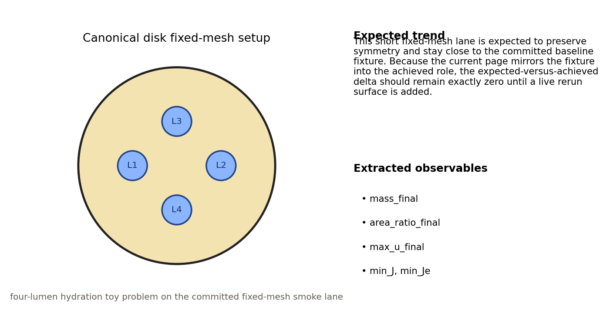
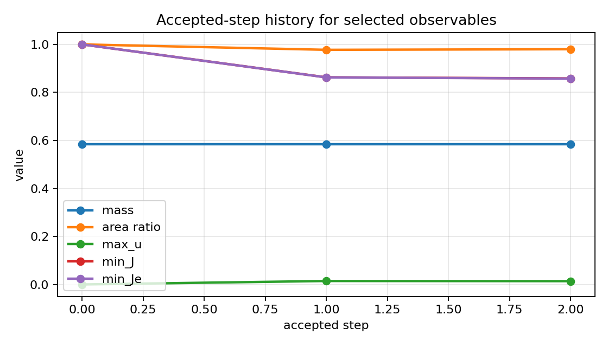
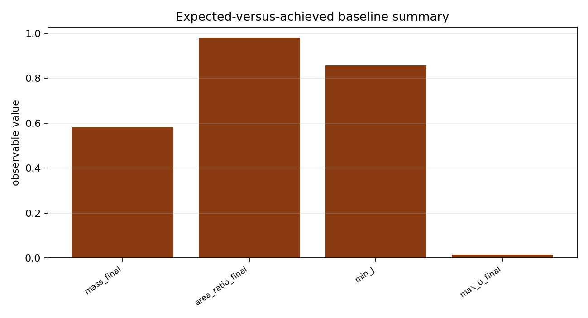
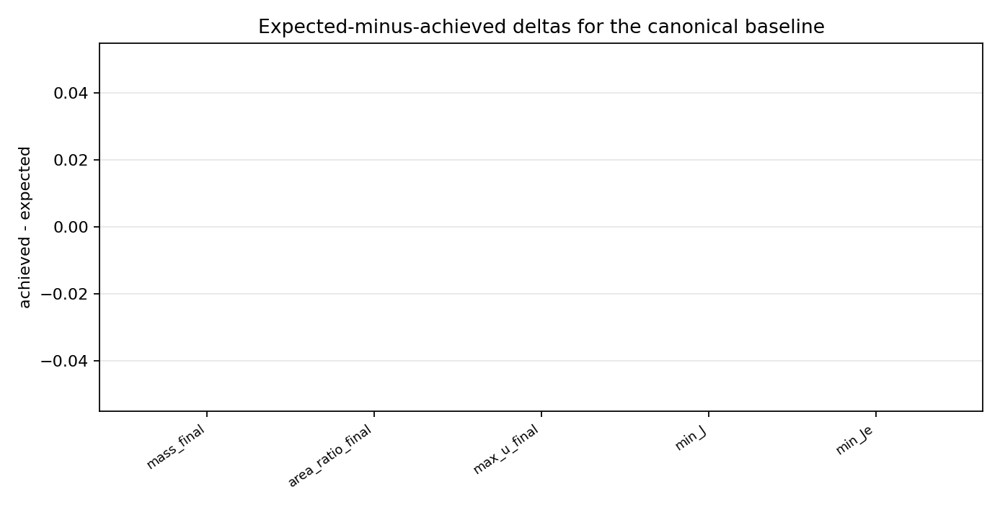

Benchmark
Canonical Disk Expected vs Achieved
Family: fixed-mesh-baselines
Fixed-mesh canonical disk expected-versus-achieved summary anchored to the committed fixture truth surface.
Target and Success Criteria
target_kind: Expected baseline
Tier: full
Unknowns active: fixed-mesh summary observables
Frozen terms: committed baseline fixture
Comparison grammar: Expected / Achieved
comparison_validity: advisory
Tickets: vv-baseline
What This Benchmark Verifies
This benchmark is a fixture-backed advisory regression anchor for the fixed-mesh canonical disk smoke lane. It is not an analytic target and not a live achieved-versus-expected rerun.
Benchmark Narrative
Narrative
Physical Problem
Canonical disk geometry with four equal-radius lumens at the cardinal positions, no-growth startup, and hydration enabled is run on a 2-step fixed-mesh schedule from `configs/vnv/canonical_disk_fixed2.toml`.
Narrative
Target Definition
The target is the committed fixed-mesh baseline fixture in `tests/fixtures/vnv/canonical_disk_fixed2_baseline`. This page compares against that expected surface for regression review, not to set physics truth or replace the deeper fixed-mesh validation gates.
Narrative
Why These Observables
The setup schematic explains the four-lumen toy problem, the accepted-step history gives a raw example of how the main observables evolve during the run, and the grouped expected-versus-achieved plus delta plots show exactly which extracted metrics are being compared against the committed baseline.
Narrative
How To Read The Error
For each observed metric, near-zero deltas indicate agreement with the committed baseline. Large shifts are flagged via advisory severity and should be reviewed before accepting drift. Because this page currently projects the committed target directly, expected and achieved can be identical until the runtime achieved source is decoupled from the fixture.
Narrative
Reference Qualification
This baseline is a committed fixture-backed advisory surface for this benchmark and is tied to committed summary/metric fixtures plus fixed-mesh runtime smoke checks in `tests/integration/test_lean_runtime_smokes.py` for invariant and convergence behavior.
Narrative
Limitations
This is a short fixed-mesh advisory checkpoint, not an adaptive-mesh study and not a full physical validation campaign. Use it for regression trend review only and interpret with the stated configuration context.
comparison_validity
pass
Setup Schematic
figure

Setup schematic for the canonical four-lumen fixed-mesh baseline and the observables extracted from it.
plots/setup-schematic.png
Raw Run Evidence
Extracted Observables
plot

Accepted-step history for mass, area ratio, max_u, min_J, and min_Je.
plots/accepted-step-history.png
Target Comparison
plot

Expected-versus-achieved baseline summary for the canonical disk fixture observables.
plots/expected-vs-achieved.png
Error Summary
plot

Achieved-minus-expected deltas for the canonical disk baseline observables.
plots/expected-vs-achieved-delta.png
Scalar Summary
| Label | Value | Unit | Comparison | Threshold | Severity |
|---|---|---|---|---|---|
| comparison_validity | advisory | expected baseline | warn |
Evidence Table
| Label | Metric | Comparison | Threshold | Severity |
|---|---|---|---|---|
| mass_final | mass_final | achieved matches expected fixture | fixture value | pass |
| area_ratio_final | area_ratio_final | achieved matches expected fixture | fixture value | pass |
| max_u_final | max_u_final | achieved matches expected fixture | fixture value | pass |
| min_J | min_J | achieved matches expected fixture | fixture value | pass |
| min_Je | min_Je | achieved matches expected fixture | fixture value | pass |
Series Overview
| Plot | Group | Observable | Case | Level | Target |
|---|---|---|---|---|---|
| mass_final | expected_vs_achieved | mass final | achieved | fixed-mesh | expected |
| area_ratio_final | expected_vs_achieved | area ratio final | achieved | fixed-mesh | expected |
| max_u_final | expected_vs_achieved | max u final | achieved | fixed-mesh | expected |
| min_J | expected_vs_achieved | min J | achieved | fixed-mesh | expected |
| min_Je | expected_vs_achieved | min Je | achieved | fixed-mesh | expected |
Cases
Case
expected
Committed fixed-mesh baseline fixture.
Case
achieved
Fixture values mirrored into expected-versus-achieved grammar for advisory regression review.